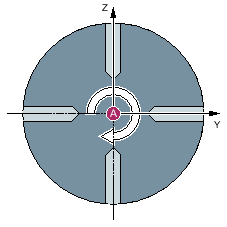
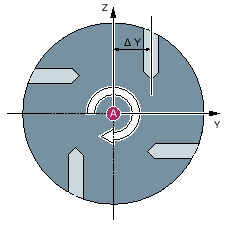
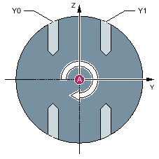

The "Arbitrary positions" function allows you to program any positions, i.e. in rectangular or polar coordinates. Individual positions are approached in the order in which you program them.
Press softkey "Delete all" to delete all positions programmed in X/Y.
You program in XA to prevent the Y axis moving during machining.
To ensure that the holes point to the center of the "Cylinder", you must first position the Y axis centrally above the "Cylinder".
Y axis is centered above the cylinder
Y axis is not centered above the cylinder
You program in XYA if the Y axis should also move during machining. A value can be specified for each position. In addition to the possibilities of XA, the following is also possible, for example.
Y axis is traversed (Y0, Y1)
See also:
Arbitrary positions - CYCLE802
Call of the cycle - CYCLE802
Approach/retraction on position pattern
Working with rotary axes